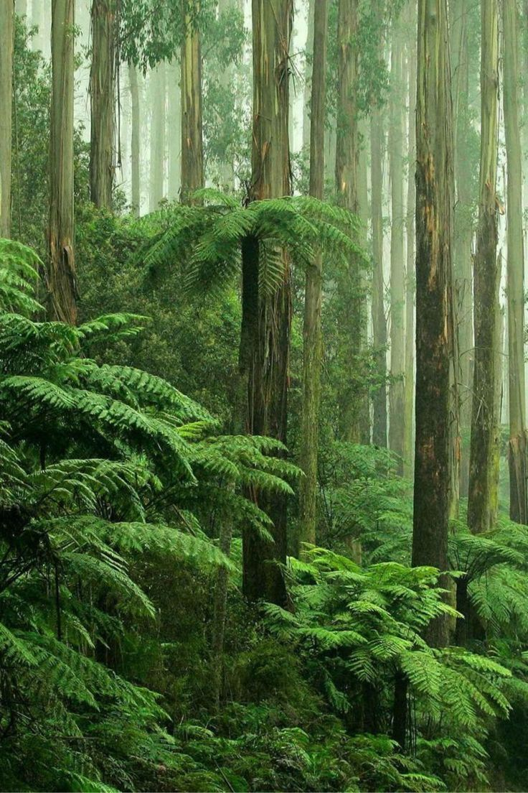
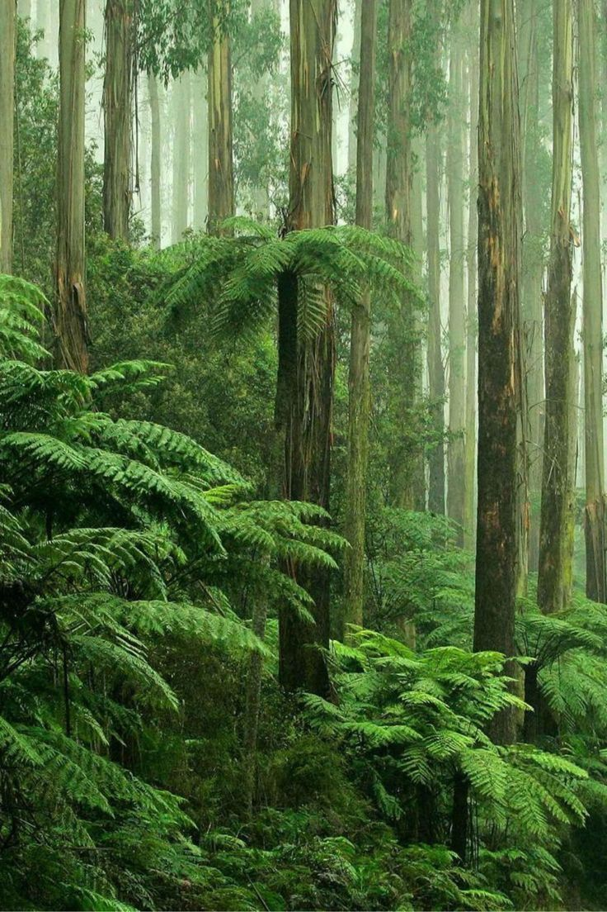
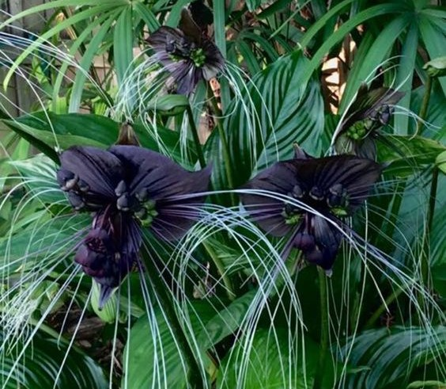

Загадочное и волшебное место, наполненное древними
деревьями и извилистыми тропами.
Это большая
естественная коллекция деревьев, состоящая из нескольких
видов деревьев, которая существует как единая экосистема.
Дом для бесчисленного множества видов растений и животных,
создавая сложную сеть жизни.
Это убежищем для
биоразнообразия и резервуаром генетического разнообразия,
защищая целостность глобального генофонда.
Лес был здесь с начала времен, местом, где бродили и правили боги. Легенды гласят, что лесные деревья видели создание мира, росли из земли и достигали неба, когда формировалось человечество. Во времена радости они осыпали землю цветами и плодами, а во времена печали их ветви тряслись и сбрасывали листья. Шло время, люди приходили и уходили, а лес оставался, его чудеса никогда не исчезали, а тайны так и не были раскрыты полностью. Некоторые говорят, что до сих пор можно услышать, как лес шепчет истории человечества. По мере того, как приходили и уходили поколения, лес приобретал разные значения и обрастал историями. Он стал убежищем, покоем, местом где можно было избежать шума и суеты мира. Некоторые отправлялись глубоко в его темные глубины в поисках мудрости и просветления, в то время как другие выбирали менее известные пути и открывали хранящиеся в нем тайны. Со временем лес стал местом красоты и исцеления, куда приходили, чтобы насладиться умиротворенной обстановкой и соединиться с миром природы.

Этот уникальный цветок представляет собой редкое и красивое зрелище
с его угольно-черными лепестками и странной, почти потусторонней
формой.
Его цвет контрастирует с пышной зеленью окрестностей,
напоминая о более темном и скрытном мире.
Веток хранит в себе
мистическую силу и опасную тайну, которую необходимо охранять.
В любом случае, оно обязательно привлечет внимание и любопытство
тех, кто его увидит.
Его красота настолько заманчива,
что невозможно удержаться и не сорвать его.
Название подразумевает, что цветок красив, но опасен,
Загадочный цветок раскрывается только ночью.